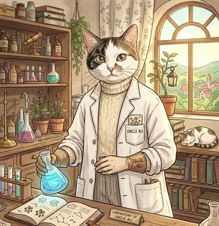

بازیهای علوم
بازیهای کلاس علوم برای دبستان. پیشرفت هر بچه روی همان گوشی یا رایانه ذخیره میشود. بعد از یک بار باز کردن، بدون اینترنت هم کار میکند.
سرزمینِ علوم بزرگتر میشه…بازیهای تازهٔ فیزیک، شیمی و زیست در راهاند. منتظر بمونید!

روی گوشی: از منوی مرورگر «افزودن به صفحهٔ اصلی» یا «نصب برنامه» را بزنید تا مثل یک برنامه باز شود.